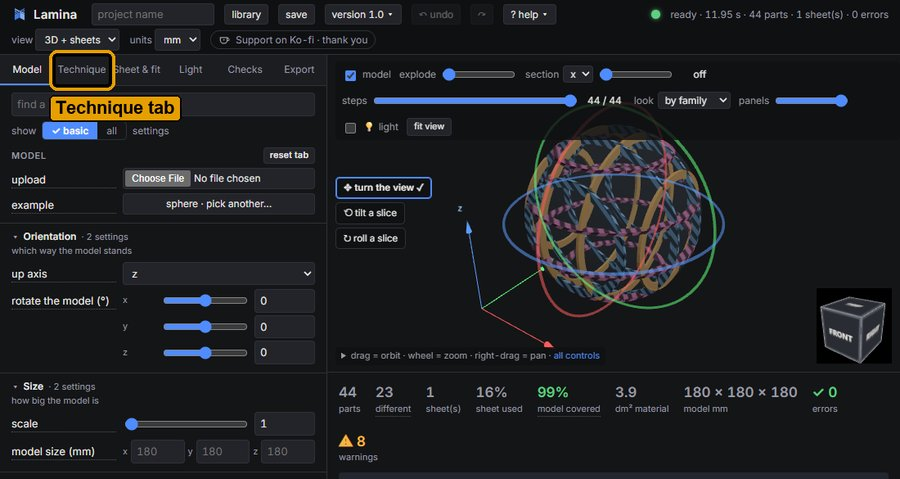
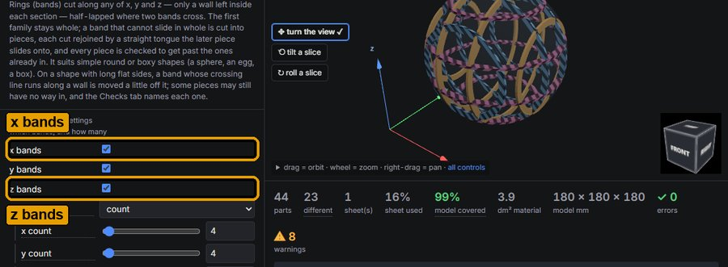
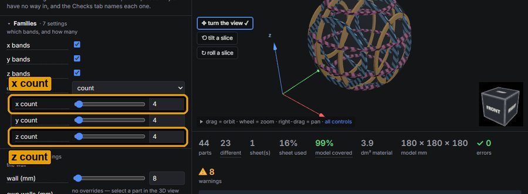
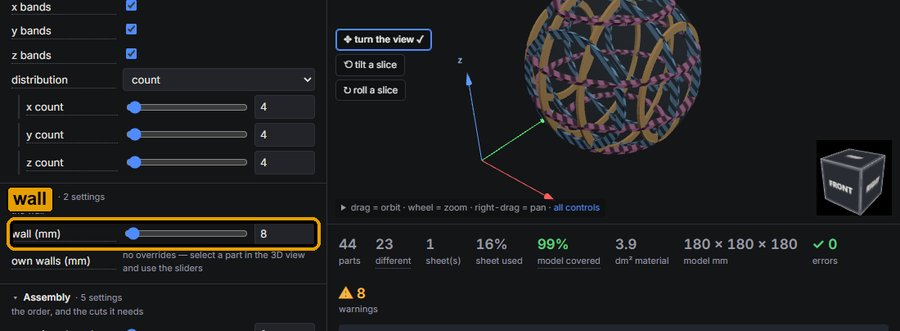
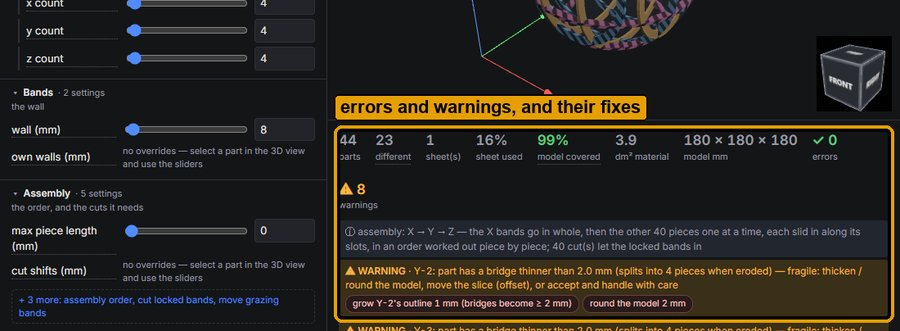
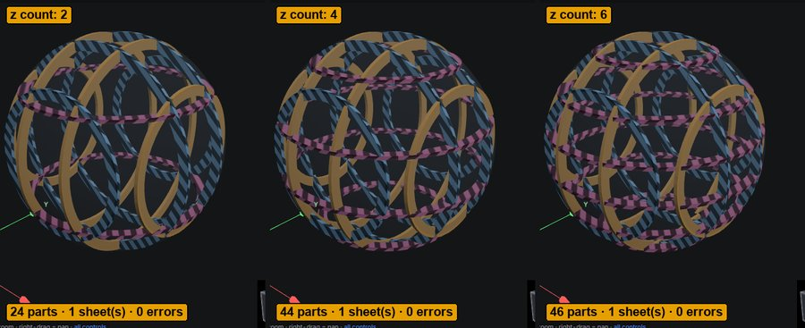
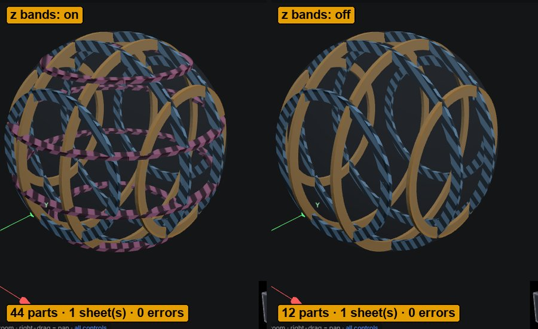
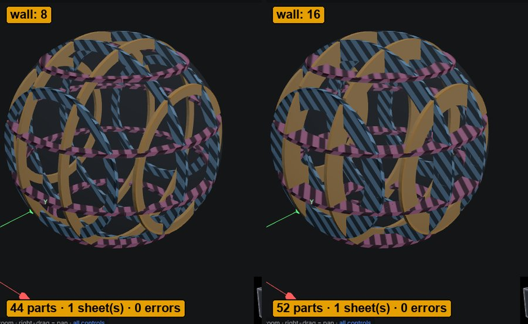
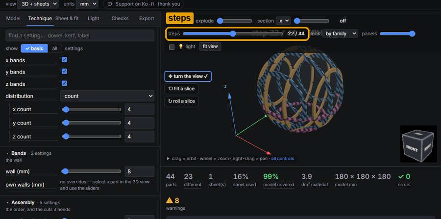

How to make a band lattice from a 3D model
Rings are cut along x, y and z. Only a wall is left of each section, and two bands are half-lapped where they cross. The result is an open lattice. This guide uses Lamina, a free laser slicer that runs in your browser.
- 1. Start hereThe steps every job has: your model, its size, the checks, the files. Open
- 2. Your machineLaser, router or 3D printer, the material and its thickness. Open
- 3. Your technique: this pageThe settings of Band Lattice, and what each one changes.
Which shapes work
Simple round or boxy shapes: a sphere, an egg, a box. A band that cannot slide in whole is cut into pieces, and each cut is joined again by a tongue. For two families of solid slices that slot together, see interlocking slices.
Set the technique
Every picture on this page shows one model: the sphere that the link opens. An orange ring with a label marks the control to use. To use your own model, upload it on the Model tab: Start here shows how.
- Open Lamina on Band Lattice. It opens with a sphere as a lattice of bands. Click the Technique tab.

- Tick x bands, y bands and z bands for the directions that get bands.

- Type the number of bands of each direction in x count, y count and z count.

- In wall (mm), type how wide the wall of each band is.

- Read the errors and warnings under the 3D view after each change. The buttons under a message fix it.

What each setting changes
Each picture shows the same sphere from the same side, with one setting changed. The label at the bottom gives the counts that Lamina shows under the 3D view.
x count, y count, z count
The number of bands in one direction.
More bands make a closer lattice and more parts. On this sphere, with 4 bands in x and in y: 2 bands in z make 24 parts, 4 make 44, and 6 make 46.

x bands, y bands, z bands
Which of the three directions get bands.
Two directions are enough for a lattice, with far fewer parts: 44 parts with all three on this sphere, 12 parts with x and y only.

wall
How wide the wall of each band is, measured from the outline in.
A wider wall closes the lattice. The number of parts changes too: 44 parts at 8 mm, 52 parts at 16 mm.

More settings
| Setting | What it does | It changes |
|---|---|---|
| distribution | count: a number of bands for each direction. distance: one band every so many mm. | With distance, a larger model gets more bands. |
| max piece length | The longest piece of a band, measured along the band. | A longer piece is cut again, and each cut gets a tongue. A piece too large for the sheet is always cut. |
Then: the machine, the checks and the files
These steps are the same for every technique, so they have their own pages.
- On the Sheet & fit tab, choose your machine, your material and its thickness: Laser, router or 3D printer.
- Correct every error, cut the fit test, and download the files: Start here, steps 10 to 13.
- Put the bands together in the order of the steps: some pieces slide onto a tongue of the piece before. To see the order, drag steps over the 3D view.
